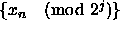
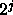

The most commonly used generator for pseudorandom numbers is the
Linear Congruential Generator (LCG) [20]:
where m is the modulus, a the multiplier, and c the additive
constant or addend. The size of the modulus constrains the period,
and it is usually chosen to be either prime or a power of 2.
This generator (with m a power of 2 and c=0) is the de facto standard included with FORTRAN and C compilers. One of the biggest disadvantages to using a power of 2 modulus is that the least significant bits of the integers produced by these LCGs have extremely short periods. For example,  will have period  [7]. In particular, this means the the least-significant bit of the LCG will alternate between 0 and 1. Since PRNs are generated with this algorithm, some cautions to the reader are in order: (i) The PRN should not be split apart to make several random numbers since the higher order bits are much more random than the lower order bits. (ii) One should avoid using the power of 2 modulus in batches of powers of 2. (For example if one has 1024 particles in 3 dimensions, one is using the PRNs 4096 at a time and the correlations between a PRN and one 4096 later may be large.) (iii) Generators with large modulus are preferable to ones with small modulus. Not only is the period longer, but the correlations are much less. In particular one should not use 32 bit modulus for careful work. In spite of this known defect of power of 2 LCGs, 48 bit multipliers (and higher) have passed many very stringent randomness tests.
Generally LCGs are best parallelized by parameterizing the iteration process, either through the multiplier or the additive constant. Based on the modulus, different parameterizations have been tried.